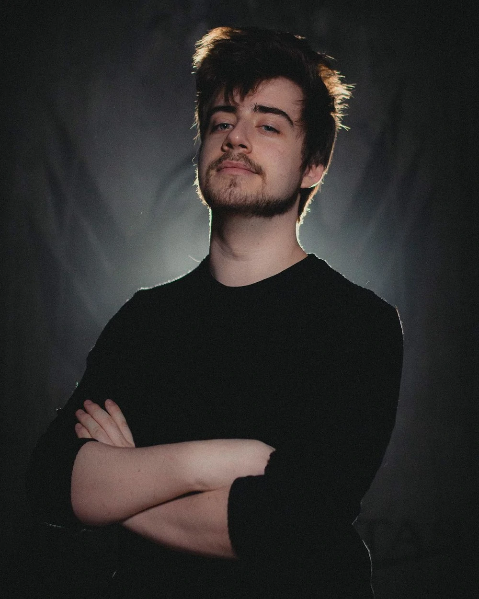

Sobre o universo
Ordem Paranormal é um universo de investigação paranormal criado por Rafael Lange (Cellbit), que teve seu início através de campanhas de RPG de mesa em transmissões ao vivo na Twitch. Um jogo da saga, Ordem Paranormal: Enigma do Medo, tem previsão de lançamento para Janeiro de 2023.
Criado por
Cellbit
- Nome: Rafael Lange Severino
- Natural de: Florianópolis, Santa Catarina
- Dara de nascimento: 11 de fevereiro de 1997
- Ocupação: Streamer, Criador de conteúdo, Diretor criativo
Rafael Lange, mais conhecido pelo seu pseudônimo Cellbit, é o criador do universo de Ordem Paranormal. Além disso, atua como roteirista, diretor criativo e criador de conteúdo nas plataformas YouTube e Twitch. Na versão RPG de mesa do universo, ele atua como narrador, responsável por gerir todo o mundo de criaturas, personagens e acontecimentos.
Aonde assistir
Atualmente, sua ramificação principal são os episódios de RPG de mesa exibidos aos sábados, às 18 horas, no canal do Cellbit na Twitch. Todas as terças ocorrem as reprises, ao mesmo horário e também na Twitch, e, às quintas-feiras, o episódio era publicado no canal Lives do Cellbit no YouTube. Recentemente foi criado o canal Ordem Paranormal.
Enigma do medo
Ordem Paranormal: Enigma do Medo será um futuro jogo de exploração, enigmas e sobrevivência com uma narrativa profunda e envolvente no universo de Ordem Paranormal. O jogo está sendo desenvolvido pela Dumativa e dirigido por Cellbit, sendo anunciado em 17 de outubro de 2020, com lançamento previsto para 2022. O projeto foi possível devido a um financiamento coletivo na plataforma Catarse, que chegou a arrecadar mais de R$ 4 milhões em poucos meses de campanha, quebrando diversos recordes na época de seu lançamento.